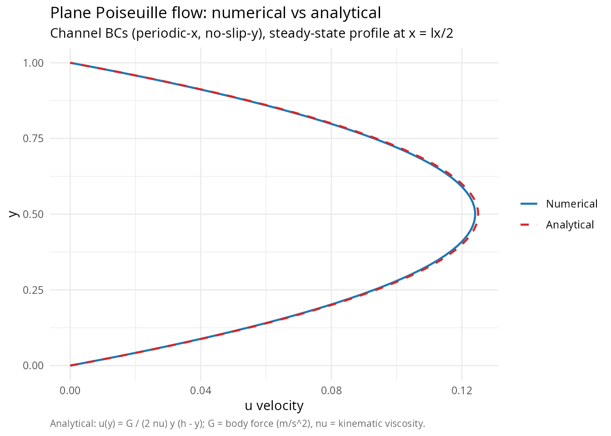
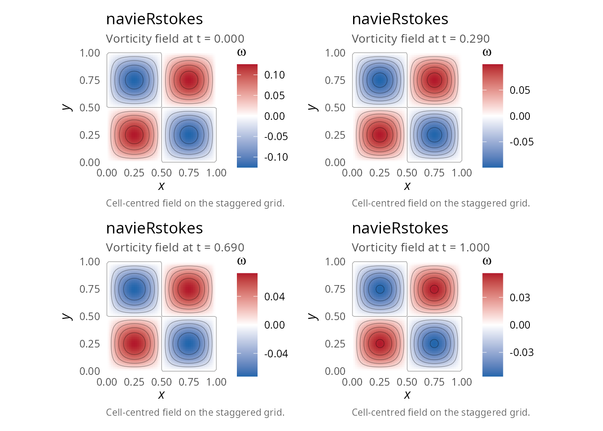
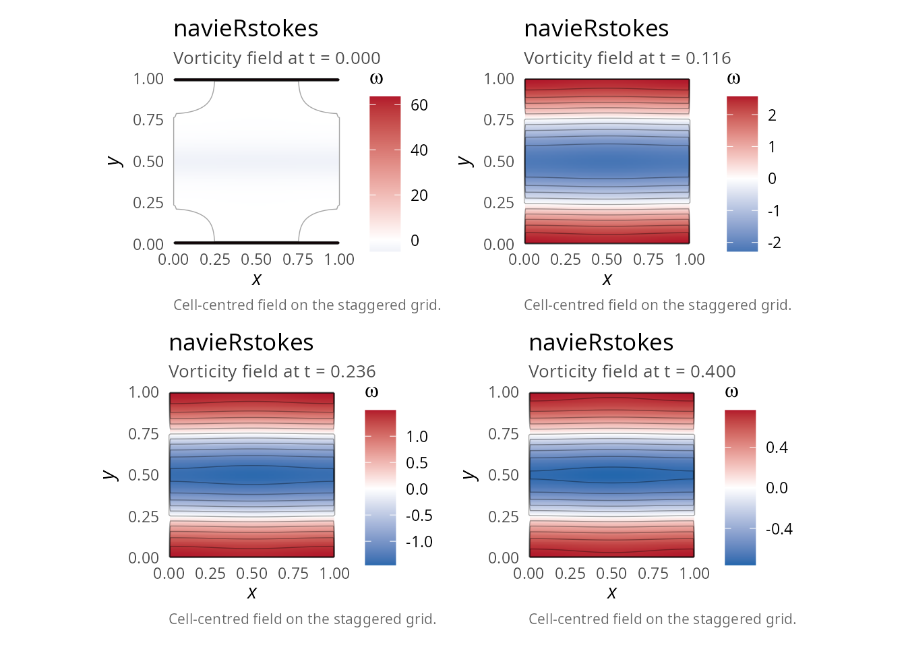
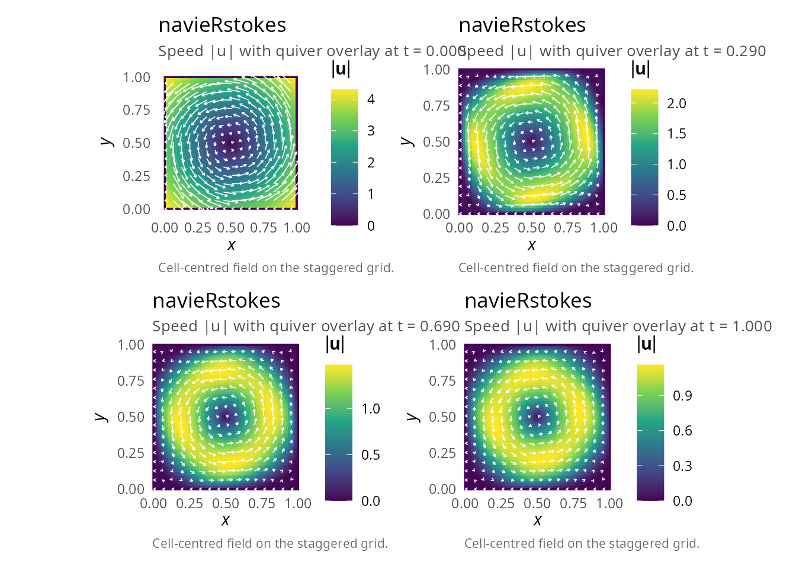
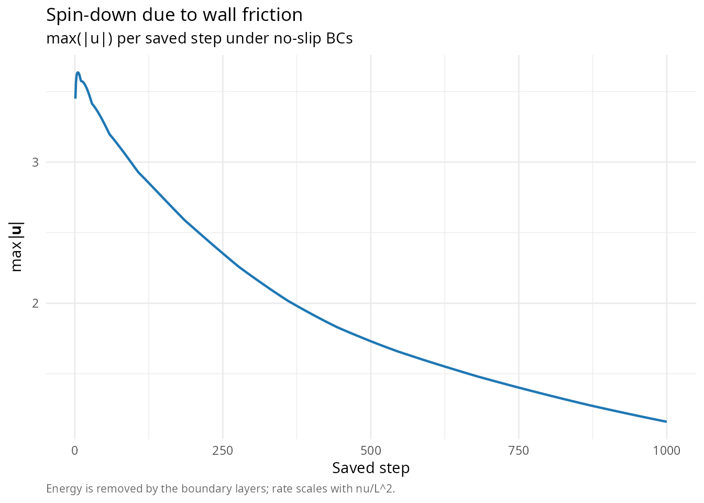
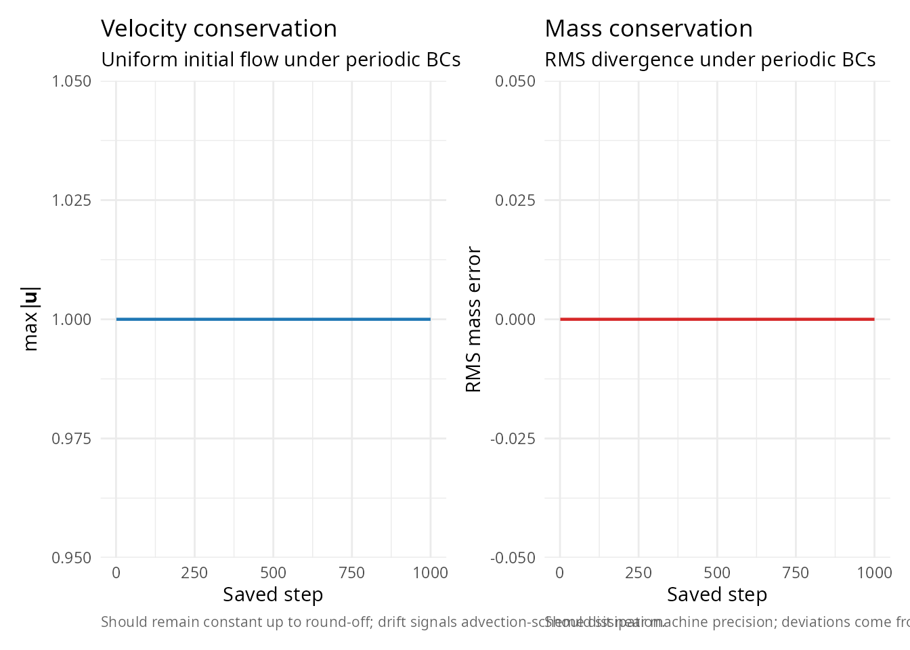
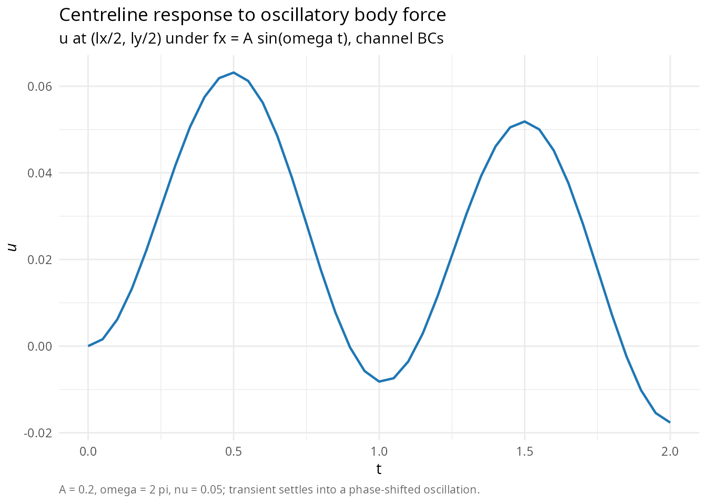
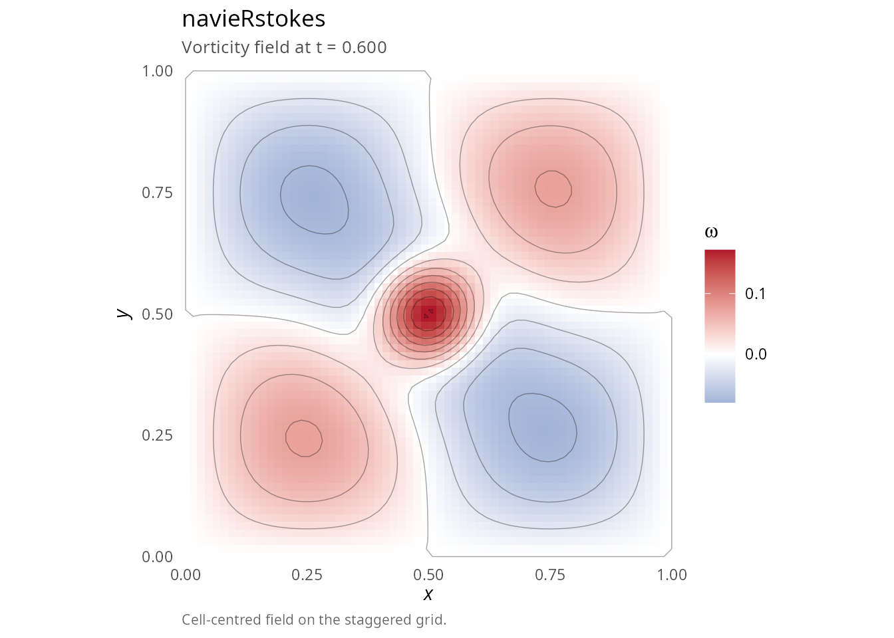

Advanced examples: Kelvin-Helmholtz, rotation, Poiseuille
Pablo Almaraz, RElab
2026-04-27
Source:vignettes/advanced-examples.Rmd
advanced-examples.RmdOverview
This vignette presents advanced applications of the
navieRstokes package, including:
- Poiseuille flow (channel flow with pressure gradient)
- Taylor-Green vortex verification
- Shear layer instability (Kelvin-Helmholtz)
- Solid body rotation with wall friction
- Parameter sensitivity studies
Example 1: Poiseuille flow (channel flow)
Pressure-driven flow between parallel plates [5].
Analytical solution
For steady flow between plates at \(y = 0\) and \(y = h\) with body force \(f_x = G > 0\) (equivalent to pressure gradient \(dp/dx = -G\)):
\[ u(y) = \frac{G}{2\mu} y(h - y) \]
Maximum velocity: \(u_{max} = \frac{Gh^2}{8\mu}\) at \(y = h/2\). This requires channel boundary conditions: periodic in x (allowing net throughflow) and no-slip Dirichlet in y (solid walls).
library(navieRstokes)
# External forcing to mimic pressure gradient
# Note: we define a local forcing function (not the exported pressure_gradient_force,
# which computes fx = -dp_dx/rho and thus drives flow in -x for positive dp_dx).
# Here we apply G > 0 directly as fx to drive rightward flow.
channel_force <- function(x, y, t) {
G <- 0.1 # Pressure gradient magnitude
list(fx = G, fy = 0)
}
# Channel BCs: periodic in x (allows throughflow), Dirichlet no-slip in y (walls).
# This is the correct setup for Poiseuille flow validation.
result_channel <- simulate_navier_stokes(
nx = 32, ny = 64,
lx = 1.0, ly = 1.0,
dt = 0.0005, nt = 10000,
nu = 0.1, # High viscosity for fast approach to steady state
initial_condition = function(x, y) list(u = 0, v = 0),
forcing_function = channel_force,
boundary_condition = list(
type = "channel",
values = list(
u_top = 0, u_bottom = 0, # No-slip walls
v_top = 0, v_bottom = 0
)
),
save_interval = 200
)
#> ¡ Starting Navier-Stokes simulation
#> Grid: 32 x 64, Reynolds number (approx): 10.00
#> Step 100/10000 | Mass error: 0.00e+00 | CFL: 0.00 | Pressure iter: 1
#> Step 200/10000 | Mass error: 0.00e+00 | CFL: 0.00 | Pressure iter: 1
#> Step 300/10000 | Mass error: 0.00e+00 | CFL: 0.00 | Pressure iter: 1
#> Step 400/10000 | Mass error: 0.00e+00 | CFL: 0.00 | Pressure iter: 1
#> Step 500/10000 | Mass error: 0.00e+00 | CFL: 0.00 | Pressure iter: 1
#> Step 600/10000 | Mass error: 0.00e+00 | CFL: 0.00 | Pressure iter: 1
#> Step 700/10000 | Mass error: 0.00e+00 | CFL: 0.00 | Pressure iter: 1
#> Step 800/10000 | Mass error: 0.00e+00 | CFL: 0.00 | Pressure iter: 1
#> Step 900/10000 | Mass error: 0.00e+00 | CFL: 0.00 | Pressure iter: 1
#> Step 1000/10000 | Mass error: 0.00e+00 | CFL: 0.00 | Pressure iter: 1
#> Step 1100/10000 | Mass error: 0.00e+00 | CFL: 0.00 | Pressure iter: 1
#> Step 1200/10000 | Mass error: 0.00e+00 | CFL: 0.00 | Pressure iter: 1
#> Step 1300/10000 | Mass error: 0.00e+00 | CFL: 0.00 | Pressure iter: 1
#> Step 1400/10000 | Mass error: 0.00e+00 | CFL: 0.00 | Pressure iter: 1
#> Step 1500/10000 | Mass error: 0.00e+00 | CFL: 0.00 | Pressure iter: 1
#> Step 1600/10000 | Mass error: 0.00e+00 | CFL: 0.00 | Pressure iter: 1
#> Step 1700/10000 | Mass error: 0.00e+00 | CFL: 0.00 | Pressure iter: 1
#> Step 1800/10000 | Mass error: 0.00e+00 | CFL: 0.00 | Pressure iter: 1
#> Step 1900/10000 | Mass error: 0.00e+00 | CFL: 0.00 | Pressure iter: 1
#> Step 2000/10000 | Mass error: 0.00e+00 | CFL: 0.00 | Pressure iter: 1
#> Step 2100/10000 | Mass error: 0.00e+00 | CFL: 0.00 | Pressure iter: 1
#> Step 2200/10000 | Mass error: 0.00e+00 | CFL: 0.00 | Pressure iter: 1
#> Step 2300/10000 | Mass error: 0.00e+00 | CFL: 0.00 | Pressure iter: 1
#> Step 2400/10000 | Mass error: 0.00e+00 | CFL: 0.00 | Pressure iter: 1
#> Step 2500/10000 | Mass error: 0.00e+00 | CFL: 0.00 | Pressure iter: 1
#> Step 2600/10000 | Mass error: 0.00e+00 | CFL: 0.00 | Pressure iter: 1
#> Step 2700/10000 | Mass error: 0.00e+00 | CFL: 0.00 | Pressure iter: 1
#> Step 2800/10000 | Mass error: 0.00e+00 | CFL: 0.00 | Pressure iter: 1
#> Step 2900/10000 | Mass error: 0.00e+00 | CFL: 0.00 | Pressure iter: 1
#> Step 3000/10000 | Mass error: 0.00e+00 | CFL: 0.00 | Pressure iter: 1
#> Step 3100/10000 | Mass error: 0.00e+00 | CFL: 0.00 | Pressure iter: 1
#> Step 3200/10000 | Mass error: 0.00e+00 | CFL: 0.00 | Pressure iter: 1
#> Step 3300/10000 | Mass error: 0.00e+00 | CFL: 0.00 | Pressure iter: 1
#> Step 3400/10000 | Mass error: 0.00e+00 | CFL: 0.00 | Pressure iter: 1
#> Step 3500/10000 | Mass error: 0.00e+00 | CFL: 0.00 | Pressure iter: 1
#> Step 3600/10000 | Mass error: 0.00e+00 | CFL: 0.00 | Pressure iter: 1
#> Step 3700/10000 | Mass error: 0.00e+00 | CFL: 0.00 | Pressure iter: 1
#> Step 3800/10000 | Mass error: 0.00e+00 | CFL: 0.00 | Pressure iter: 1
#> Step 3900/10000 | Mass error: 0.00e+00 | CFL: 0.00 | Pressure iter: 1
#> Step 4000/10000 | Mass error: 0.00e+00 | CFL: 0.00 | Pressure iter: 1
#> Step 4100/10000 | Mass error: 0.00e+00 | CFL: 0.00 | Pressure iter: 1
#> Step 4200/10000 | Mass error: 0.00e+00 | CFL: 0.00 | Pressure iter: 1
#> Step 4300/10000 | Mass error: 0.00e+00 | CFL: 0.00 | Pressure iter: 1
#> Step 4400/10000 | Mass error: 0.00e+00 | CFL: 0.00 | Pressure iter: 1
#> Step 4500/10000 | Mass error: 0.00e+00 | CFL: 0.00 | Pressure iter: 1
#> Step 4600/10000 | Mass error: 0.00e+00 | CFL: 0.00 | Pressure iter: 1
#> Step 4700/10000 | Mass error: 0.00e+00 | CFL: 0.00 | Pressure iter: 1
#> Step 4800/10000 | Mass error: 0.00e+00 | CFL: 0.00 | Pressure iter: 1
#> Step 4900/10000 | Mass error: 0.00e+00 | CFL: 0.00 | Pressure iter: 1
#> Step 5000/10000 | Mass error: 0.00e+00 | CFL: 0.00 | Pressure iter: 1
#> Step 5100/10000 | Mass error: 0.00e+00 | CFL: 0.00 | Pressure iter: 1
#> Step 5200/10000 | Mass error: 0.00e+00 | CFL: 0.00 | Pressure iter: 1
#> Step 5300/10000 | Mass error: 0.00e+00 | CFL: 0.00 | Pressure iter: 1
#> Step 5400/10000 | Mass error: 0.00e+00 | CFL: 0.00 | Pressure iter: 1
#> Step 5500/10000 | Mass error: 0.00e+00 | CFL: 0.00 | Pressure iter: 1
#> Step 5600/10000 | Mass error: 0.00e+00 | CFL: 0.00 | Pressure iter: 1
#> Step 5700/10000 | Mass error: 0.00e+00 | CFL: 0.00 | Pressure iter: 1
#> Step 5800/10000 | Mass error: 0.00e+00 | CFL: 0.00 | Pressure iter: 1
#> Step 5900/10000 | Mass error: 0.00e+00 | CFL: 0.00 | Pressure iter: 1
#> Step 6000/10000 | Mass error: 0.00e+00 | CFL: 0.00 | Pressure iter: 1
#> Step 6100/10000 | Mass error: 0.00e+00 | CFL: 0.00 | Pressure iter: 1
#> Step 6200/10000 | Mass error: 0.00e+00 | CFL: 0.00 | Pressure iter: 1
#> Step 6300/10000 | Mass error: 0.00e+00 | CFL: 0.00 | Pressure iter: 1
#> Step 6400/10000 | Mass error: 0.00e+00 | CFL: 0.00 | Pressure iter: 1
#> Step 6500/10000 | Mass error: 0.00e+00 | CFL: 0.00 | Pressure iter: 1
#> Step 6600/10000 | Mass error: 0.00e+00 | CFL: 0.00 | Pressure iter: 1
#> Step 6700/10000 | Mass error: 0.00e+00 | CFL: 0.00 | Pressure iter: 1
#> Step 6800/10000 | Mass error: 0.00e+00 | CFL: 0.00 | Pressure iter: 1
#> Step 6900/10000 | Mass error: 0.00e+00 | CFL: 0.00 | Pressure iter: 1
#> Step 7000/10000 | Mass error: 0.00e+00 | CFL: 0.00 | Pressure iter: 1
#> Step 7100/10000 | Mass error: 0.00e+00 | CFL: 0.00 | Pressure iter: 1
#> Step 7200/10000 | Mass error: 0.00e+00 | CFL: 0.00 | Pressure iter: 1
#> Step 7300/10000 | Mass error: 0.00e+00 | CFL: 0.00 | Pressure iter: 1
#> Step 7400/10000 | Mass error: 0.00e+00 | CFL: 0.00 | Pressure iter: 1
#> Step 7500/10000 | Mass error: 0.00e+00 | CFL: 0.00 | Pressure iter: 1
#> Step 7600/10000 | Mass error: 0.00e+00 | CFL: 0.00 | Pressure iter: 1
#> Step 7700/10000 | Mass error: 0.00e+00 | CFL: 0.00 | Pressure iter: 1
#> Step 7800/10000 | Mass error: 0.00e+00 | CFL: 0.00 | Pressure iter: 1
#> Step 7900/10000 | Mass error: 0.00e+00 | CFL: 0.00 | Pressure iter: 1
#> Step 8000/10000 | Mass error: 0.00e+00 | CFL: 0.00 | Pressure iter: 1
#> Step 8100/10000 | Mass error: 0.00e+00 | CFL: 0.00 | Pressure iter: 1
#> Step 8200/10000 | Mass error: 0.00e+00 | CFL: 0.00 | Pressure iter: 1
#> Step 8300/10000 | Mass error: 0.00e+00 | CFL: 0.00 | Pressure iter: 1
#> Step 8400/10000 | Mass error: 0.00e+00 | CFL: 0.00 | Pressure iter: 1
#> Step 8500/10000 | Mass error: 0.00e+00 | CFL: 0.00 | Pressure iter: 1
#> Step 8600/10000 | Mass error: 0.00e+00 | CFL: 0.00 | Pressure iter: 1
#> Step 8700/10000 | Mass error: 0.00e+00 | CFL: 0.00 | Pressure iter: 1
#> Step 8800/10000 | Mass error: 0.00e+00 | CFL: 0.00 | Pressure iter: 1
#> Step 8900/10000 | Mass error: 0.00e+00 | CFL: 0.00 | Pressure iter: 1
#> Step 9000/10000 | Mass error: 0.00e+00 | CFL: 0.00 | Pressure iter: 1
#> Step 9100/10000 | Mass error: 0.00e+00 | CFL: 0.00 | Pressure iter: 1
#> Step 9200/10000 | Mass error: 0.00e+00 | CFL: 0.00 | Pressure iter: 1
#> Step 9300/10000 | Mass error: 0.00e+00 | CFL: 0.00 | Pressure iter: 1
#> Step 9400/10000 | Mass error: 0.00e+00 | CFL: 0.00 | Pressure iter: 1
#> Step 9500/10000 | Mass error: 0.00e+00 | CFL: 0.00 | Pressure iter: 1
#> Step 9600/10000 | Mass error: 0.00e+00 | CFL: 0.00 | Pressure iter: 1
#> Step 9700/10000 | Mass error: 0.00e+00 | CFL: 0.00 | Pressure iter: 1
#> Step 9800/10000 | Mass error: 0.00e+00 | CFL: 0.00 | Pressure iter: 1
#> Step 9900/10000 | Mass error: 0.00e+00 | CFL: 0.00 | Pressure iter: 1
#> Step 10000/10000 | Mass error: 0.00e+00 | CFL: 0.00 | Pressure iter: 1
#> ✔ Simulation completed successfully
# Compare with analytical solution
final_idx <- dim(result_channel$u)[3]
u_numerical <- result_channel$u[round(result_channel$parameters$nx / 2), , final_idx]
# Analytical Poiseuille profile for unit-density incompressible flow:
# u(y) = G / (2 * nu) * y * (h - y), where G is the body-force magnitude (m/s^2)
# and nu is kinematic viscosity. No rho dependence for incompressible formulation.
G <- 0.1
nu <- result_channel$parameters$nu
h <- result_channel$parameters$ly
y <- result_channel$y
u_analytical <- (G / (2 * nu)) * y * (h - y)
library(ggplot2)
df_pois <- data.frame(
u = c(u_numerical, u_analytical),
y = rep(y, 2),
series = factor(rep(c("Numerical", "Analytical"), each = length(y)),
levels = c("Numerical", "Analytical"))
)
ggplot(df_pois, aes(x = u, y = y, colour = series, linetype = series)) +
geom_path(linewidth = 0.8) +
scale_colour_manual(values = c(Numerical = "#1F77B4", Analytical = "#D62728")) +
scale_linetype_manual(values = c(Numerical = 1, Analytical = 2)) +
labs(title = "Plane Poiseuille flow: numerical vs analytical",
subtitle = "Channel BCs (periodic-x, no-slip-y), steady-state profile at x = lx/2",
caption = "Analytical: u(y) = G / (2 nu) y (h - y); G = body force (m/s^2), nu = kinematic viscosity.",
x = "u velocity", y = "y", colour = NULL, linetype = NULL) +
theme_minimal(base_size = 11) +
theme(plot.caption = element_text(color = "grey40", size = 8, hjust = 0))
Example 2: Taylor-Green vortex verification
Exact solution to the Navier-Stokes equations [1], useful for code verification.
Analytical solution
The package uses this sign convention:
\[ u(x,y,t) = A\sin(kx)\cos(ky) e^{-2\nu k^2 t} \]
\[ v(x,y,t) = -A\cos(kx)\sin(ky) e^{-2\nu k^2 t} \]
\[ p(x,y,t) = \frac{\rho A^2}{4}[\cos(2kx) + \cos(2ky)] e^{-4\nu k^2 t} \]
Domain: \([0, 1] \times [0, 1]\) with \(k = 2\pi\) and periodic boundary conditions.
# Use package's divergence-free vortex initial condition
result_TG <- simulate_navier_stokes(
nx = 64, ny = 64,
lx = 1.0, ly = 1.0,
dt = 0.001, nt = 1000,
nu = 0.01,
initial_condition = function(x, y) vortex_ic(x, y, A = 0.01), # Small amplitude!
boundary_condition = list(type = "periodic"),
save_interval = 10
)
#> ¡ Starting Navier-Stokes simulation
#> Grid: 64 x 64, Reynolds number (approx): 100.00
#> Step 100/1000 | Mass error: 9.31e-07 | CFL: 0.00 | Pressure iter: 1
#> Step 200/1000 | Mass error: 6.38e-07 | CFL: 0.00 | Pressure iter: 1
#> Step 300/1000 | Mass error: 6.66e-07 | CFL: 0.00 | Pressure iter: 1
#> Step 400/1000 | Mass error: 5.54e-07 | CFL: 0.00 | Pressure iter: 1
#> Step 500/1000 | Mass error: 3.33e-07 | CFL: 0.00 | Pressure iter: 1
#> Step 600/1000 | Mass error: 4.87e-07 | CFL: 0.00 | Pressure iter: 1
#> Step 700/1000 | Mass error: 2.42e-07 | CFL: 0.00 | Pressure iter: 1
#> Step 800/1000 | Mass error: 2.95e-07 | CFL: 0.00 | Pressure iter: 1
#> Step 900/1000 | Mass error: 2.82e-07 | CFL: 0.00 | Pressure iter: 1
#> Step 1000/1000 | Mass error: 1.25e-07 | CFL: 0.00 | Pressure iter: 1
#> ✔ Simulation completed successfully
library(patchwork)
tg1 <- plot(result_TG, time_index = 1, plot_type = "vorticity")
tg2 <- plot(result_TG, time_index = 30, plot_type = "vorticity")
tg3 <- plot(result_TG, time_index = 70, plot_type = "vorticity")
tg4 <- plot(result_TG, time_index = NULL, plot_type = "vorticity")
(tg1 | tg2) / (tg3 | tg4)
#> Warning: The following aesthetics were dropped during statistical transformation: fill.
#> ℹ This can happen when ggplot fails to infer the correct grouping structure in
#> the data.
#> ℹ Did you forget to specify a `group` aesthetic or to convert a numerical
#> variable into a factor?
#> The following aesthetics were dropped during statistical transformation: fill.
#> ℹ This can happen when ggplot fails to infer the correct grouping structure in
#> the data.
#> ℹ Did you forget to specify a `group` aesthetic or to convert a numerical
#> variable into a factor?
#> The following aesthetics were dropped during statistical transformation: fill.
#> ℹ This can happen when ggplot fails to infer the correct grouping structure in
#> the data.
#> ℹ Did you forget to specify a `group` aesthetic or to convert a numerical
#> variable into a factor?
#> The following aesthetics were dropped during statistical transformation: fill.
#> ℹ This can happen when ggplot fails to infer the correct grouping structure in
#> the data.
#> ℹ Did you forget to specify a `group` aesthetic or to convert a numerical
#> variable into a factor?
# Check mass conservation (should be near machine precision)
cat("Mass conservation error:", result_TG$diagnostics$mean_mass_error, "\n")
#> Mass conservation error: 5.782938e-06Example 3: Kelvin-Helmholtz instability
Shear layer instability between two parallel streams.
Important: This is a challenging simulation requiring conservative parameters.
# Use package's shear layer initial condition
result_KH <- simulate_navier_stokes(
nx = 128, ny = 128,
lx = 1.0, ly = 1.0,
dt = 0.0001, nt = 4000,
nu = 0.1, # High viscosity for stability
initial_condition = function(x, y) {
shear_layer_ic(x, y, U0 = 0.5, delta = 0.1, epsilon = 0.01) # Conservative parameters
},
boundary_condition = list(type = "periodic"),
save_interval = 40
)
#> ¡ Starting Navier-Stokes simulation
#> Grid: 128 x 128, Reynolds number (approx): 10.00
#> Step 100/4000 | Mass error: 1.59e-07 | CFL: 0.01 | Pressure iter: 141
#> Step 200/4000 | Mass error: 9.79e-08 | CFL: 0.01 | Pressure iter: 127
#> Step 300/4000 | Mass error: 9.14e-08 | CFL: 0.01 | Pressure iter: 116
#> Step 400/4000 | Mass error: 9.09e-08 | CFL: 0.01 | Pressure iter: 106
#> Step 500/4000 | Mass error: 9.13e-08 | CFL: 0.01 | Pressure iter: 99
#> Step 600/4000 | Mass error: 9.20e-08 | CFL: 0.01 | Pressure iter: 90
#> Step 700/4000 | Mass error: 9.25e-08 | CFL: 0.01 | Pressure iter: 84
#> Step 800/4000 | Mass error: 9.31e-08 | CFL: 0.01 | Pressure iter: 77
#> Step 900/4000 | Mass error: 9.35e-08 | CFL: 0.01 | Pressure iter: 71
#> Step 1000/4000 | Mass error: 9.40e-08 | CFL: 0.00 | Pressure iter: 65
#> Step 1100/4000 | Mass error: 9.43e-08 | CFL: 0.00 | Pressure iter: 62
#> Step 1200/4000 | Mass error: 9.48e-08 | CFL: 0.00 | Pressure iter: 56
#> Step 1300/4000 | Mass error: 9.52e-08 | CFL: 0.00 | Pressure iter: 52
#> Step 1400/4000 | Mass error: 9.56e-08 | CFL: 0.00 | Pressure iter: 49
#> Step 1500/4000 | Mass error: 9.59e-08 | CFL: 0.00 | Pressure iter: 45
#> Step 1600/4000 | Mass error: 9.61e-08 | CFL: 0.00 | Pressure iter: 41
#> Step 1700/4000 | Mass error: 9.64e-08 | CFL: 0.00 | Pressure iter: 39
#> Step 1800/4000 | Mass error: 9.67e-08 | CFL: 0.00 | Pressure iter: 35
#> Step 1900/4000 | Mass error: 9.69e-08 | CFL: 0.00 | Pressure iter: 31
#> Step 2000/4000 | Mass error: 9.72e-08 | CFL: 0.00 | Pressure iter: 29
#> Step 2100/4000 | Mass error: 9.74e-08 | CFL: 0.00 | Pressure iter: 27
#> Step 2200/4000 | Mass error: 9.75e-08 | CFL: 0.00 | Pressure iter: 25
#> Step 2300/4000 | Mass error: 9.78e-08 | CFL: 0.00 | Pressure iter: 23
#> Step 2400/4000 | Mass error: 9.79e-08 | CFL: 0.00 | Pressure iter: 22
#> Step 2500/4000 | Mass error: 9.81e-08 | CFL: 0.00 | Pressure iter: 20
#> Step 2600/4000 | Mass error: 9.82e-08 | CFL: 0.00 | Pressure iter: 18
#> Step 2700/4000 | Mass error: 9.83e-08 | CFL: 0.00 | Pressure iter: 16
#> Step 2800/4000 | Mass error: 9.84e-08 | CFL: 0.00 | Pressure iter: 16
#> Step 2900/4000 | Mass error: 9.86e-08 | CFL: 0.00 | Pressure iter: 14
#> Step 3000/4000 | Mass error: 9.86e-08 | CFL: 0.00 | Pressure iter: 14
#> Step 3100/4000 | Mass error: 9.88e-08 | CFL: 0.00 | Pressure iter: 13
#> Step 3200/4000 | Mass error: 9.88e-08 | CFL: 0.00 | Pressure iter: 11
#> Step 3300/4000 | Mass error: 9.90e-08 | CFL: 0.00 | Pressure iter: 10
#> Step 3400/4000 | Mass error: 9.90e-08 | CFL: 0.00 | Pressure iter: 10
#> Step 3500/4000 | Mass error: 9.91e-08 | CFL: 0.00 | Pressure iter: 9
#> Step 3600/4000 | Mass error: 9.92e-08 | CFL: 0.00 | Pressure iter: 9
#> Step 3700/4000 | Mass error: 9.92e-08 | CFL: 0.00 | Pressure iter: 7
#> Step 3800/4000 | Mass error: 9.92e-08 | CFL: 0.00 | Pressure iter: 7
#> Step 3900/4000 | Mass error: 9.94e-08 | CFL: 0.00 | Pressure iter: 6
#> Step 4000/4000 | Mass error: 9.94e-08 | CFL: 0.00 | Pressure iter: 5
#> ✔ Simulation completed successfully
kh1 <- plot(result_KH, time_index = 1, plot_type = "vorticity")
kh2 <- plot(result_KH, time_index = 30, plot_type = "vorticity")
kh3 <- plot(result_KH, time_index = 60, plot_type = "vorticity")
kh4 <- plot(result_KH, time_index = NULL, plot_type = "vorticity")
(kh1 | kh2) / (kh3 | kh4)
#> Warning: The following aesthetics were dropped during statistical transformation: fill.
#> ℹ This can happen when ggplot fails to infer the correct grouping structure in
#> the data.
#> ℹ Did you forget to specify a `group` aesthetic or to convert a numerical
#> variable into a factor?
#> The following aesthetics were dropped during statistical transformation: fill.
#> ℹ This can happen when ggplot fails to infer the correct grouping structure in
#> the data.
#> ℹ Did you forget to specify a `group` aesthetic or to convert a numerical
#> variable into a factor?
#> The following aesthetics were dropped during statistical transformation: fill.
#> ℹ This can happen when ggplot fails to infer the correct grouping structure in
#> the data.
#> ℹ Did you forget to specify a `group` aesthetic or to convert a numerical
#> variable into a factor?
#> The following aesthetics were dropped during statistical transformation: fill.
#> ℹ This can happen when ggplot fails to infer the correct grouping structure in
#> the data.
#> ℹ Did you forget to specify a `group` aesthetic or to convert a numerical
#> variable into a factor?
Example 4: Solid body rotation
Rotating flow with wall friction demonstrating spin-down.
# Use package's rotating initial condition
result_rotation <- simulate_navier_stokes(
nx = 64, ny = 64,
lx = 1.0, ly = 1.0,
dt = 0.001, nt = 1000,
nu = 0.01,
initial_condition = function(x, y) {
rotating_ic(x, y, omega = 2 * pi, x0 = 0.5, y0 = 0.5)
},
boundary_condition = list(
type = "dirichlet",
values = list(
u_left = 0, u_right = 0,
u_top = 0, u_bottom = 0,
v_left = 0, v_right = 0,
v_top = 0, v_bottom = 0
)
),
save_interval = 10
)
#> ¡ Starting Navier-Stokes simulation
#> Grid: 64 x 64, Reynolds number (approx): 100.00
#> Warning in simulate_navier_stokes(nx = 64, ny = 64, lx = 1, ly = 1, dt = 0.001,
#> : ⚠ Poisson solver did not converge at step 11 (error = 9.14e-02, tolerance =
#> 1.00e-03)
#> Warning in simulate_navier_stokes(nx = 64, ny = 64, lx = 1, ly = 1, dt = 0.001,
#> : ⚠ Poisson solver did not converge at step 12 (error = 7.97e-02, tolerance =
#> 1.00e-03)
#> Warning in simulate_navier_stokes(nx = 64, ny = 64, lx = 1, ly = 1, dt = 0.001,
#> : ⚠ Poisson solver did not converge at step 13 (error = 6.97e-02, tolerance =
#> 1.00e-03)
#> Warning in simulate_navier_stokes(nx = 64, ny = 64, lx = 1, ly = 1, dt = 0.001,
#> : ⚠ Poisson solver did not converge at step 14 (error = 6.14e-02, tolerance =
#> 1.00e-03)
#> Warning in simulate_navier_stokes(nx = 64, ny = 64, lx = 1, ly = 1, dt = 0.001,
#> : ⚠ Poisson solver did not converge at step 15 (error = 5.44e-02, tolerance =
#> 1.00e-03)
#> Step 100/1000 | Mass error: 3.73e-02 | CFL: 0.19 | Pressure iter: 1281
#> Step 200/1000 | Mass error: 2.92e-02 | CFL: 0.16 | Pressure iter: 1281
#> Step 300/1000 | Mass error: 2.34e-02 | CFL: 0.14 | Pressure iter: 1281
#> Step 400/1000 | Mass error: 1.82e-02 | CFL: 0.12 | Pressure iter: 1281
#> Step 500/1000 | Mass error: 1.43e-02 | CFL: 0.11 | Pressure iter: 1281
#> Step 600/1000 | Mass error: 1.16e-02 | CFL: 0.10 | Pressure iter: 1281
#> Step 700/1000 | Mass error: 9.83e-03 | CFL: 0.09 | Pressure iter: 1281
#> Step 800/1000 | Mass error: 8.51e-03 | CFL: 0.08 | Pressure iter: 1281
#> Step 900/1000 | Mass error: 7.47e-03 | CFL: 0.08 | Pressure iter: 1261
#> Step 1000/1000 | Mass error: 6.63e-03 | CFL: 0.07 | Pressure iter: 1202
#> ✔ Simulation completed successfully
rot1 <- plot(result_rotation, time_index = 1, plot_type = "velocity")
rot2 <- plot(result_rotation, time_index = 30, plot_type = "velocity")
rot3 <- plot(result_rotation, time_index = 70, plot_type = "velocity")
rot4 <- plot(result_rotation, time_index = NULL, plot_type = "velocity")
(rot1 | rot2) / (rot3 | rot4)
ggplot(data.frame(step = seq_along(result_rotation$diagnostics$max_velocity),
Umax = result_rotation$diagnostics$max_velocity),
aes(x = step, y = Umax)) +
geom_line(linewidth = 0.8, colour = "#1F77B4") +
labs(title = "Spin-down due to wall friction",
subtitle = "max(|u|) per saved step under no-slip BCs",
caption = "Energy is removed by the boundary layers; rate scales with nu/L^2.",
x = "Saved step", y = expression(max(group("|", bold(u), "|")))) +
theme_minimal(base_size = 11) +
theme(plot.caption = element_text(color = "grey40", size = 8, hjust = 0))
Example 5: Uniform flow stability
Simple test case to verify solver stability.
# Uniform flow with periodic boundaries
result_uniform <- simulate_navier_stokes(
nx = 64, ny = 64,
lx = 1.0, ly = 1.0,
dt = 0.001, nt = 1000,
nu = 0.01,
initial_condition = function(x, y) list(u = 1.0, v = 0.0),
boundary_condition = list(type = "periodic"),
save_interval = 10
)
#> ¡ Starting Navier-Stokes simulation
#> Grid: 64 x 64, Reynolds number (approx): 100.00
#> Step 100/1000 | Mass error: 0.00e+00 | CFL: 0.06 | Pressure iter: 1
#> Step 200/1000 | Mass error: 0.00e+00 | CFL: 0.06 | Pressure iter: 1
#> Step 300/1000 | Mass error: 0.00e+00 | CFL: 0.06 | Pressure iter: 1
#> Step 400/1000 | Mass error: 0.00e+00 | CFL: 0.06 | Pressure iter: 1
#> Step 500/1000 | Mass error: 0.00e+00 | CFL: 0.06 | Pressure iter: 1
#> Step 600/1000 | Mass error: 0.00e+00 | CFL: 0.06 | Pressure iter: 1
#> Step 700/1000 | Mass error: 0.00e+00 | CFL: 0.06 | Pressure iter: 1
#> Step 800/1000 | Mass error: 0.00e+00 | CFL: 0.06 | Pressure iter: 1
#> Step 900/1000 | Mass error: 0.00e+00 | CFL: 0.06 | Pressure iter: 1
#> Step 1000/1000 | Mass error: 0.00e+00 | CFL: 0.06 | Pressure iter: 1
#> ✔ Simulation completed successfully
# Verify velocity remains constant
cat("Initial max velocity:", result_uniform$diagnostics$max_velocity[1], "\n")
#> Initial max velocity: 1
cat("Final max velocity:", tail(result_uniform$diagnostics$max_velocity, 1), "\n")
#> Final max velocity: 1
cat(
"Velocity variation:",
sd(result_uniform$diagnostics$max_velocity), "\n"
)
#> Velocity variation: 0
df_uni <- data.frame(
step = seq_along(result_uniform$diagnostics$max_velocity),
Umax = result_uniform$diagnostics$max_velocity,
mass = result_uniform$diagnostics$mass_error
)
p_Uu <- ggplot(df_uni, aes(x = step, y = Umax)) +
geom_line(linewidth = 0.8, colour = "#1F77B4") +
labs(title = "Velocity conservation",
subtitle = "Uniform initial flow under periodic BCs",
caption = "Should remain constant up to round-off; drift signals advection-scheme dissipation.",
x = "Saved step", y = expression(max(group("|", bold(u), "|")))) +
theme_minimal(base_size = 11) +
theme(plot.caption = element_text(color = "grey40", size = 8, hjust = 0))
p_Um <- ggplot(df_uni, aes(x = step, y = mass)) +
geom_line(linewidth = 0.8, colour = "#D62728") +
labs(title = "Mass conservation",
subtitle = "RMS divergence under periodic BCs",
caption = "Should sit near machine precision; deviations come from the Poisson tolerance.",
x = "Saved step", y = "RMS mass error") +
theme_minimal(base_size = 11) +
theme(plot.caption = element_text(color = "grey40", size = 8, hjust = 0))
p_Uu | p_Um
Example 6: Oscillatory channel forcing
Time-periodic body force in a channel produces a Stokes-layer-like
oscillating profile near the walls. The bulk velocity follows
oscillatory_force with frequency omega; the
boundary layer thickness scales as sqrt(2 * nu / omega)
(Stokes layer).
result_osc <- simulate_navier_stokes(
nx = 32, ny = 64,
lx = 1.0, ly = 1.0,
dt = 0.001, nt = 2000,
nu = 0.05,
initial_condition = function(x, y) list(u = 0, v = 0),
forcing_function = function(x, y, t) {
oscillatory_force(x, y, t, A = 0.2, omega = 2 * pi)
},
boundary_condition = list(
type = "channel",
values = list(u_top = 0, u_bottom = 0, v_top = 0, v_bottom = 0)
),
save_interval = 50
)
#> ¡ Starting Navier-Stokes simulation
#> Grid: 32 x 64, Reynolds number (approx): 20.00
#> Step 100/2000 | Mass error: 0.00e+00 | CFL: 0.00 | Pressure iter: 1
#> Step 200/2000 | Mass error: 0.00e+00 | CFL: 0.00 | Pressure iter: 1
#> Step 300/2000 | Mass error: 0.00e+00 | CFL: 0.00 | Pressure iter: 1
#> Step 400/2000 | Mass error: 0.00e+00 | CFL: 0.00 | Pressure iter: 1
#> Step 500/2000 | Mass error: 0.00e+00 | CFL: 0.00 | Pressure iter: 1
#> Step 600/2000 | Mass error: 0.00e+00 | CFL: 0.00 | Pressure iter: 1
#> Step 700/2000 | Mass error: 0.00e+00 | CFL: 0.00 | Pressure iter: 1
#> Step 800/2000 | Mass error: 0.00e+00 | CFL: 0.00 | Pressure iter: 1
#> Step 900/2000 | Mass error: 0.00e+00 | CFL: 0.00 | Pressure iter: 1
#> Step 1000/2000 | Mass error: 0.00e+00 | CFL: 0.00 | Pressure iter: 1
#> Step 1100/2000 | Mass error: 0.00e+00 | CFL: 0.00 | Pressure iter: 1
#> Step 1200/2000 | Mass error: 0.00e+00 | CFL: 0.00 | Pressure iter: 1
#> Step 1300/2000 | Mass error: 0.00e+00 | CFL: 0.00 | Pressure iter: 1
#> Step 1400/2000 | Mass error: 0.00e+00 | CFL: 0.00 | Pressure iter: 1
#> Step 1500/2000 | Mass error: 0.00e+00 | CFL: 0.00 | Pressure iter: 1
#> Step 1600/2000 | Mass error: 0.00e+00 | CFL: 0.00 | Pressure iter: 1
#> Step 1700/2000 | Mass error: 0.00e+00 | CFL: 0.00 | Pressure iter: 1
#> Step 1800/2000 | Mass error: 0.00e+00 | CFL: 0.00 | Pressure iter: 1
#> Step 1900/2000 | Mass error: 0.00e+00 | CFL: 0.00 | Pressure iter: 1
#> Step 2000/2000 | Mass error: 0.00e+00 | CFL: 0.00 | Pressure iter: 1
#> ✔ Simulation completed successfully
# Centreline u(t): probe the channel centre across saved snapshots
i_mid <- round(result_osc$parameters$nx / 2)
j_mid <- round(result_osc$parameters$ny / 2)
u_centre <- result_osc$u[i_mid, j_mid, ]
ggplot(data.frame(t = result_osc$t, u = u_centre),
aes(x = t, y = u)) +
geom_line(linewidth = 0.8, colour = "#1F77B4") +
labs(title = "Centreline response to oscillatory body force",
subtitle = "u at (lx/2, ly/2) under fx = A sin(omega t), channel BCs",
caption = "A = 0.2, omega = 2 pi, nu = 0.05; transient settles into a phase-shifted oscillation.",
x = "t", y = expression(italic(u))) +
theme_minimal(base_size = 11) +
theme(plot.caption = element_text(color = "grey40", size = 8, hjust = 0))
Example 7: Localized vortex injection
localized_vortex_force injects rotational forcing in a
Gaussian envelope around a chosen point. Combined with a periodic
Taylor-Green base flow, it locally perturbs the vortex field; the
vorticity diagnostic exposes the resulting swirl.
result_loc <- simulate_navier_stokes(
nx = 64, ny = 64,
lx = 1.0, ly = 1.0,
dt = 0.001, nt = 600,
nu = 0.01,
initial_condition = function(x, y) vortex_ic(x, y, A = 0.01),
forcing_function = function(x, y, t) {
localized_vortex_force(x, y, t, x0 = 0.5, y0 = 0.5,
sigma = 0.1, A = 0.5)
},
boundary_condition = list(type = "periodic"),
save_interval = 50
)
#> ¡ Starting Navier-Stokes simulation
#> Grid: 64 x 64, Reynolds number (approx): 100.00
#> Step 100/600 | Mass error: 9.89e-07 | CFL: 0.00 | Pressure iter: 1
#> Step 200/600 | Mass error: 7.06e-07 | CFL: 0.00 | Pressure iter: 1
#> Step 300/600 | Mass error: 6.65e-07 | CFL: 0.00 | Pressure iter: 1
#> Step 400/600 | Mass error: 6.17e-07 | CFL: 0.00 | Pressure iter: 1
#> Step 500/600 | Mass error: 3.58e-07 | CFL: 0.00 | Pressure iter: 1
#> Step 600/600 | Mass error: 5.07e-07 | CFL: 0.00 | Pressure iter: 1
#> ✔ Simulation completed successfully
omega_final <- compute_vorticity(
result_loc$u[, , dim(result_loc$u)[3]],
result_loc$v[, , dim(result_loc$v)[3]],
result_loc$parameters$dx,
result_loc$parameters$dy
)
cat("Peak vorticity at final step:", max(abs(omega_final), na.rm = TRUE), "\n")
#> Peak vorticity at final step: 0.1720097
plot(result_loc, plot_type = "vorticity")
#> Warning: The following aesthetics were dropped during statistical transformation: fill.
#> ℹ This can happen when ggplot fails to infer the correct grouping structure in
#> the data.
#> ℹ Did you forget to specify a `group` aesthetic or to convert a numerical
#> variable into a factor?
Parameter sensitivity studies
Effect of time step
Study CFL number effects:
# Small dt (conservative)
result_small_dt <- simulate_navier_stokes(
nx = 32, ny = 32, lx = 1.0, ly = 1.0,
dt = 0.0005, nt = 2000, nu = 0.01,
initial_condition = function(x, y) vortex_ic(x, y, A = 0.01),
boundary_condition = list(type = "periodic"),
save_interval = 20
)
#> ¡ Starting Navier-Stokes simulation
#> Grid: 32 x 32, Reynolds number (approx): 100.00
#> Step 100/2000 | Mass error: 4.90e-06 | CFL: 0.00 | Pressure iter: 1
#> Step 200/2000 | Mass error: 1.04e-07 | CFL: 0.00 | Pressure iter: 1
#> Step 300/2000 | Mass error: 9.16e-08 | CFL: 0.00 | Pressure iter: 1
#> Step 400/2000 | Mass error: 7.01e-08 | CFL: 0.00 | Pressure iter: 1
#> Step 500/2000 | Mass error: 4.08e-08 | CFL: 0.00 | Pressure iter: 1
#> Step 600/2000 | Mass error: 3.86e-08 | CFL: 0.00 | Pressure iter: 1
#> Step 700/2000 | Mass error: 3.53e-08 | CFL: 0.00 | Pressure iter: 1
#> Step 800/2000 | Mass error: 3.10e-08 | CFL: 0.00 | Pressure iter: 1
#> Step 900/2000 | Mass error: 2.85e-08 | CFL: 0.00 | Pressure iter: 1
#> Step 1000/2000 | Mass error: 2.63e-08 | CFL: 0.00 | Pressure iter: 1
#> Step 1100/2000 | Mass error: 2.42e-08 | CFL: 0.00 | Pressure iter: 1
#> Step 1200/2000 | Mass error: 2.22e-08 | CFL: 0.00 | Pressure iter: 1
#> Step 1300/2000 | Mass error: 2.05e-08 | CFL: 0.00 | Pressure iter: 1
#> Step 1400/2000 | Mass error: 1.89e-08 | CFL: 0.00 | Pressure iter: 1
#> Step 1500/2000 | Mass error: 1.74e-08 | CFL: 0.00 | Pressure iter: 1
#> Step 1600/2000 | Mass error: 1.60e-08 | CFL: 0.00 | Pressure iter: 1
#> Step 1700/2000 | Mass error: 1.47e-08 | CFL: 0.00 | Pressure iter: 1
#> Step 1800/2000 | Mass error: 1.36e-08 | CFL: 0.00 | Pressure iter: 1
#> Step 1900/2000 | Mass error: 1.25e-08 | CFL: 0.00 | Pressure iter: 1
#> Step 2000/2000 | Mass error: 1.15e-08 | CFL: 0.00 | Pressure iter: 1
#> ✔ Simulation completed successfully
# Larger dt (less conservative)
result_large_dt <- simulate_navier_stokes(
nx = 32, ny = 32, lx = 1.0, ly = 1.0,
dt = 0.002, nt = 500, nu = 0.01,
initial_condition = function(x, y) vortex_ic(x, y, A = 0.01),
boundary_condition = list(type = "periodic"),
save_interval = 5
)
#> ¡ Starting Navier-Stokes simulation
#> Grid: 32 x 32, Reynolds number (approx): 100.00
#> Step 100/500 | Mass error: 1.32e-06 | CFL: 0.00 | Pressure iter: 1
#> Step 200/500 | Mass error: 4.52e-07 | CFL: 0.00 | Pressure iter: 1
#> Step 300/500 | Mass error: 1.72e-07 | CFL: 0.00 | Pressure iter: 1
#> Step 400/500 | Mass error: 2.28e-07 | CFL: 0.00 | Pressure iter: 1
#> Step 500/500 | Mass error: 1.03e-07 | CFL: 0.00 | Pressure iter: 1
#> ✔ Simulation completed successfully
# Compare stability
cat("Small dt - Mean mass error:", result_small_dt$diagnostics$mean_mass_error, "\n")
#> Small dt - Mean mass error: 8.625488e-06
cat("Large dt - Mean mass error:", result_large_dt$diagnostics$mean_mass_error, "\n")
#> Large dt - Mean mass error: 2.123716e-05Effect of grid resolution
Compare different resolutions:
# Coarse grid
result_coarse <- simulate_navier_stokes(
nx = 32, ny = 32, lx = 1.0, ly = 1.0,
dt = 0.001, nt = 500, nu = 0.01,
initial_condition = function(x, y) list(u = 1.0, v = 0.0),
boundary_condition = list(type = "periodic"),
save_interval = 10
)
#> ¡ Starting Navier-Stokes simulation
#> Grid: 32 x 32, Reynolds number (approx): 100.00
#> Step 100/500 | Mass error: 0.00e+00 | CFL: 0.03 | Pressure iter: 1
#> Step 200/500 | Mass error: 0.00e+00 | CFL: 0.03 | Pressure iter: 1
#> Step 300/500 | Mass error: 0.00e+00 | CFL: 0.03 | Pressure iter: 1
#> Step 400/500 | Mass error: 0.00e+00 | CFL: 0.03 | Pressure iter: 1
#> Step 500/500 | Mass error: 0.00e+00 | CFL: 0.03 | Pressure iter: 1
#> ✔ Simulation completed successfully
# Fine grid
result_fine <- simulate_navier_stokes(
nx = 128, ny = 128, lx = 1.0, ly = 1.0,
dt = 0.001, nt = 500, nu = 0.01,
initial_condition = function(x, y) list(u = 1.0, v = 0.0),
boundary_condition = list(type = "periodic"),
save_interval = 10
)
#> ¡ Starting Navier-Stokes simulation
#> Grid: 128 x 128, Reynolds number (approx): 100.00
#> Step 100/500 | Mass error: 0.00e+00 | CFL: 0.13 | Pressure iter: 1
#> Step 200/500 | Mass error: 0.00e+00 | CFL: 0.13 | Pressure iter: 1
#> Step 300/500 | Mass error: 0.00e+00 | CFL: 0.13 | Pressure iter: 1
#> Step 400/500 | Mass error: 0.00e+00 | CFL: 0.13 | Pressure iter: 1
#> Step 500/500 | Mass error: 0.00e+00 | CFL: 0.13 | Pressure iter: 1
#> ✔ Simulation completed successfully
cat("Coarse (32x32) - Mass error:", result_coarse$diagnostics$mean_mass_error, "\n")
#> Coarse (32x32) - Mass error: 0
cat("Fine (128x128) - Mass error:", result_fine$diagnostics$mean_mass_error, "\n")
#> Fine (128x128) - Mass error: 0Tips for advanced simulations
1. Choosing time step
Balance between accuracy and stability: - Start with
dt = 0.1 * min(dx, dy)^2 / nu (diffusion-limited) - Monitor
CFL numbers in diagnostics - Reduce if warnings appear
2. Grid resolution
Rules of thumb: - Resolve smallest length scale: \(\Delta x \lesssim \eta\) where \(\eta = (\nu^3/\epsilon)^{1/4}\) (Kolmogorov scale) - For boundary layers: 10-20 points in layer thickness - For vortices: 10-15 points across vortex core
3. Solver settings
- Use
pressure_solver = "sor"(2-3x faster than Jacobi) - Increase
max_iterif warnings appear -
tolerance = 1e-5is usually sufficient
4. Memory management
For long simulations: - Use large save_interval (e.g.,
50-100) - Post-process data periodically - Save only final states if
transient not needed
5. Initial conditions
Critical: Always specify
initial_condition with non-zero velocity: - Without it,
flow starts at rest and remains at rest - Use package functions:
vortex_ic(), rotating_ic(),
shear_layer_ic() - Keep amplitudes small (A ≤ 0.01) for
stability
Numerical accuracy
The solver uses:
- Convection: First-order upwind scheme (O(Δx) accuracy, stable but introduces numerical diffusion)
- Diffusion: Second-order central differences (O(Δx²) accuracy)
- Time integration: First-order explicit Euler (O(Δt) accuracy)
Overall accuracy is O(Δx) + O(Δt). The upwind scheme adds numerical viscosity of order |u|Δx/2, which can be significant at low Reynolds numbers on coarse grids.
Performance
Typical performance with Rcpp kernels:
| Grid size | Time steps | Time |
|---|---|---|
| 64×64 | 1000 | ~0.4 s |
| 128×128 | 1000 | ~2.5 s |
| 256×256 | 1000 | ~30 s |
References
[1] Chorin, A. J. (1968). Numerical solution of the Navier-Stokes equations. Mathematics of Computation, 22(104), 745-762. DOI: 10.1090/S0025-5718-1968-0242392-2
[2] Anderson, J. D. (1995). Computational fluid dynamics: The basics with applications. McGraw-Hill. ISBN: 978-0-07-001685-9.
[3] Pope, S. B. (2000). Turbulent flows. Cambridge University Press. ISBN: 978-0-521-59886-6. DOI: 10.1017/CBO9780511840531
[4] Pozrikidis, C. (2016). Fluid dynamics: Theory, computation, and numerical simulation (3rd ed.). Springer. ISBN: 978-1-4899-7990-2. DOI: 10.1007/978-1-4899-7991-9
[5] Tritton, D. J. (1988). Physical fluid dynamics (2nd ed.). Oxford University Press. ISBN: 978-0-19-854493-7.